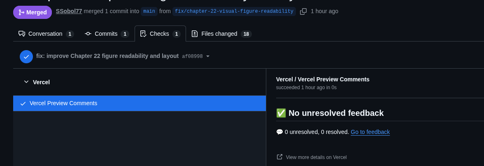

GitHub: Issue, ветка и Pull Request
От формулировки задачи в Issue до предложения изменений через Pull Request — путь одного изменения на GitHub.
История коммитов в разделе 23.28 пока существует только в локальном репозитории — на одном компьютере. GitHub хранит удалённую копию этой истории и добавляет вокруг неё рабочий процесс, рассчитанный на совместную разработку: Issue, ветки и Pull Request.
Issue — формулировка задачи
Issue — запись на GitHub, описывающая задачу, найденную проблему или предложение. Прежде чем писать код для новой возможности, полезно кратко сформулировать, что именно нужно сделать и как проверить, что это сделано:
## Problem
SafeSort не умеет находить файлы с одинаковым содержимым.
## Expected behavior
Команда `safesort duplicates ROOT` должна вывести группы файлов с одинаковым содержимым, не изменяя ни одного файла.
## Acceptance criteria
- [ ] Файлы группируются по (размер, SHA-256)
- [ ] Хеш вычисляется только для файлов с совпадающим размером
- [ ] Команда ничего не удаляет
- [ ] Есть тесты на пустые файлы и на настоящие дубликаты
Ветка — изолированное место для изменений
Ветка (branch) — независимая линия истории, отходящая от
main. Пока изменения делаются в отдельной ветке, основная
ветка репозитория остаётся нетронутой и всегда содержит последнюю рабочую версию:
git switch -c feat/duplicate-detection
# ...пишем код и тесты, коммитим изменения...
git push -u origin feat/duplicate-detection
Pull Request — предложение изменений
Pull Request (PR) — предложение перенести изменения из одной ветки в
другую, обычно из рабочей ветки в main. PR не «сливает» код
автоматически: он открывает изменения для просмотра, автоматических проверок (раздел
23.30) и обсуждения, прежде чем код попадёт в основную ветку.

Коротко
- Issue формулирует задачу до того, как написан код — так проще понять, что именно нужно сделать и как проверить результат.
- Ветка изолирует работу над одной задачей, оставляя main нетронутой до готовности.
- Pull Request открывает изменения для проверки и обсуждения перед слиянием в main — он не сливает код автоматически сам по себе.